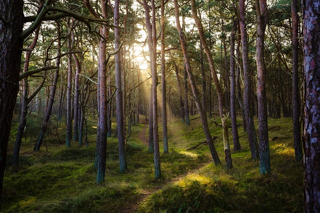

Tarinani
Tältä sivulta löydät yhteystietoni sekä kartan, joka näyttää alueen, jossa ohjaan metsäkylpyjä. Toimin pääasiassa Pirkanmaan alueella, mutta järjestän ohjauksia myös muualla sopimuksen mukaan.
Luonto on ollut minulle aina enemmän kuin paikka – se on ollut turvasatama, hengähdys ja koti. Lapsuudesta asti olen löytänyt metsästä rauhan, jota en ole löytänyt mistään muualta. Ajan myötä huomasin, että metsä ei ainoastaan rauhoita, vaan myös palauttaa, selkeyttää ja kannattelee. Kun elämä toi eteen kiirettä, kuormitusta ja jatkuvaa suorittamista, palasin yhä useammin metsään kuuntelemaan itseäni ja ympäröivää maailmaa.

Metsäkylpyyn tutustuminen tuntui kuin paluulta johonkin hyvin tuttuun. Shinrin-yokun ajatus pysähtymisestä, hengittämisestä ja luonnon vaikutusten vastaanottamisesta resonoi syvästi. Aloin huomata, miten pienetkin hetket metsässä – tuulen humina, sammaleen tuoksu, valon siivilöityminen oksien lomasta – auttoivat minua palaamaan itseeni.
Kun ymmärsin, miten paljon metsä voi antaa, heräsi halu jakaa tämä kokemus myös muille. Kouluttautuminen metsäkylpyohjaajaksi oli luonnollinen askel: tapa syventää omaa luontoyhteyttäni ja oppia ohjaamaan muita lempeästi kohti samaa rauhaa ja läsnäoloa.
Tänään koen, että metsäkylpy ei ole vain menetelmä – se on tapa elää. Se on kutsu hidastaa, kuunnella ja olla aidosti läsnä. Ohjaajana haluan tarjota turvallisen ja kannattelevan tilan, jossa jokainen voi löytää oman rytminsä ja oman tapansa olla luonnon kanssa. Metsä tekee työn, minä vain avaan oven.
Yhteystiedot ja sijainti
Nimi: Niina
Puhelin: [lisää puhelinnumero]
Sähköposti: [lisää sähköpostiosoite]
Ota yhteyttä
Jos haluat kysyä lisää, varata metsäkylvyn tai keskustella mahdollisuudesta järjestää ohjattu luontohetki esimerkiksi työyhteisölle, voit lähettää viestin alla olevan lomakkeen kautta. Vastaan sinulle mahdollisimman pian.